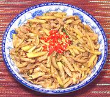

|
Chicken with Chayote SquashChina - Sichuan | ||||
| Serves: Effort: Sched: DoAhead: |
2 main ** 32 min Most |
A simple recipe redolent with Sichuan flavors. While originating in the Americas (along with all other squash), Chayotes have become quite popular in South and Southeast Asia. In this recipe, the crunchy chayote makes a delightful contrast to the soft chicken. | |||
|
12 6 4 4 1 1/4 ------ 1 1 1/4 1/4 1/4 ------ 2-1/2 1 1 1 |
oz oz cl in --- T T c t t --- T T t T |
Chicken meat (1) Chayote Pickled chilis (2) Scallions Garlic Ginger root -- Sauce Soy Sauce Rice Vinegar Stock Salt Sichuan Pepper (3) ---------- Oil Vinegar, dark (4) Cornstarch Water |
Prep - (20 min)
|